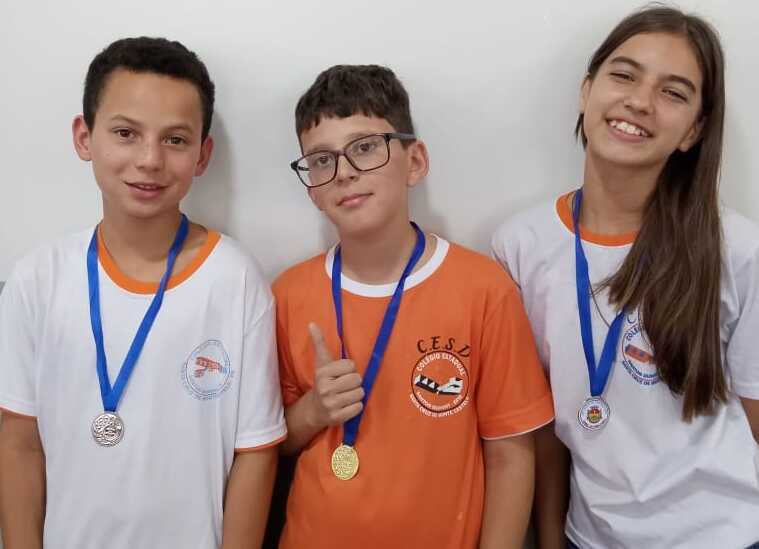

Coluna Adryann Cruzarolli
Coluna Adryann Cruzarolli
23 de Novembro 2023
Rumores se espalham por toda o Colégio, perguntas do tipo "O Santos Dumont vai virar um Colégio Militar?" começam a surgir na cabeça de todos os alunos, até alguns dias atrás niguém tinha a certeza se essa informação era apenas boatos, ou era realmente uma informação real, com esses rumores o diretor Ezidio Biasi desidiu tomar uma iniciativa de fazer uma reunião com todos os pais para explicar esses boatos que estavam circulando. Essa "sugestão" veio a partir do governo, até o momento esse projeto não foi aprovado.
Siga abaixo algumas informações sobre o Colégio Cívico Militar:
A Equipe Gestora é composta por Direção-Geral, Direção Auxiliar e Equipe Pedagógica da instituição de ensino. No modelo federal, a Equipe de Militares é composta por um Oficial de Gestão Escolar, um Oficial de Gestão Educacional e uma equipe de Monitores. No modelo estadual, a Equipe de Militares é composta por um Diretor Cívico-Militar e uma equipe de Monitores. As atribuições da equipe gestora estão especificadas no Regimento Escolar dos Colégios Cívico-Militares.
Informção retirada do site OFICIAL do governo do estado do Paraná
10 de Novembro de 2023
Hoje no Colégio Estadual Santos Dumont aconteceu um campeonato de Xadrez,contando com a presença de Alunos de outras escolas, como, Escola Municipal Anibal Israel Liutti, Brasileirinho e Ivaina, algo bem fora da rotina, após esse campeonato os alunos que ficaram em até 3º lugar ganharam medalhas,siga a lista abaixo dos ganhadores.
1º Lugar:Estevão (Aluno do Santos Dumont)
2º Lugar:Leticia (Aluna do Santos Dumont)
3º Lugar:Matheus (Aluno da Ivaina)

Não podiamos deixar de fora os ganhadores do Xadrez Mirim, siga a baixo a foto dos ganhadores.
1º Lugar: Hiago (Aluno do Santos Dumont)
2º Lugar: Geovana (Aluna do Santos Dumont)
3º Lugar: João Lucas ( Aluno do Santos Dumont)
